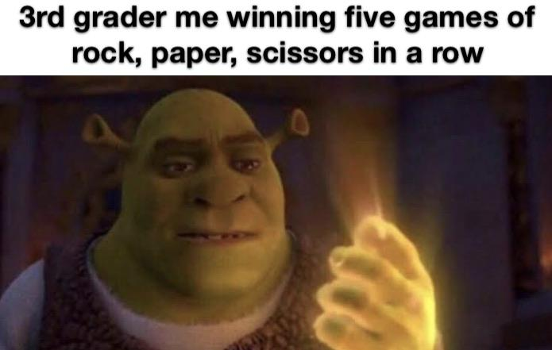
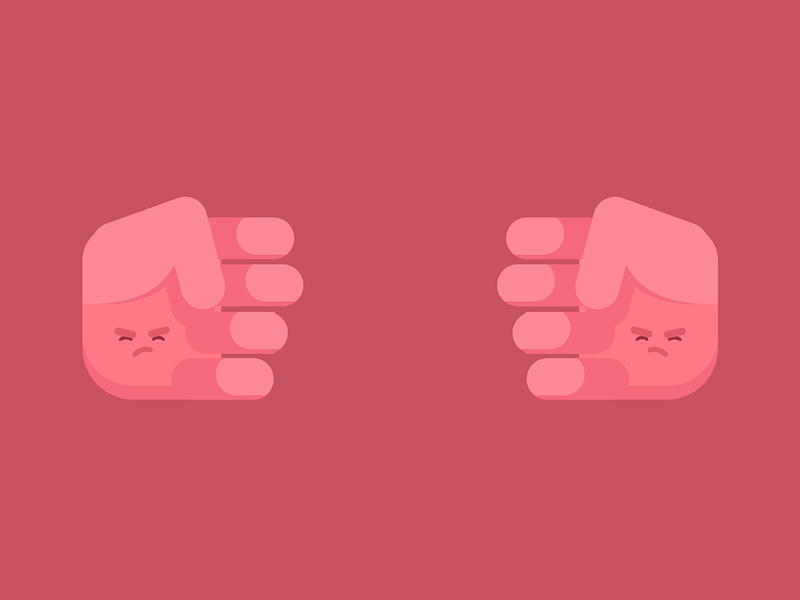
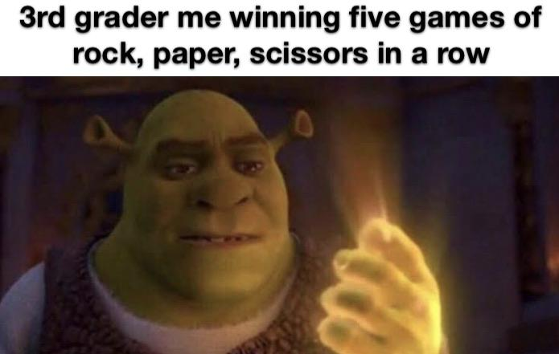
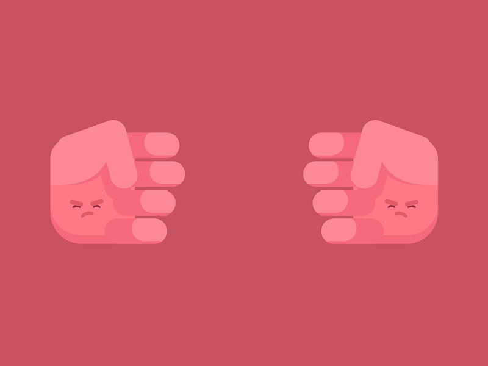
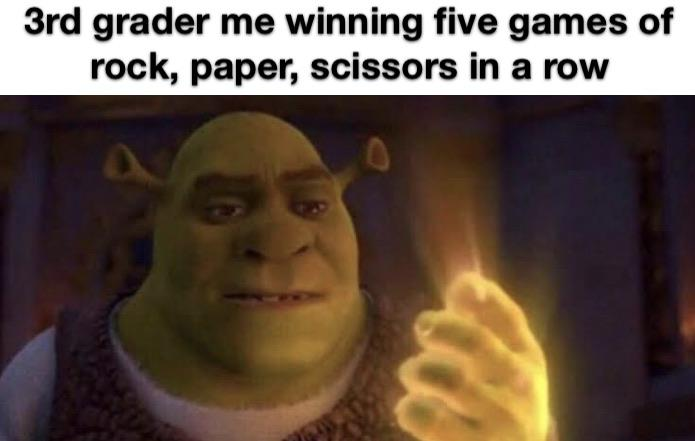
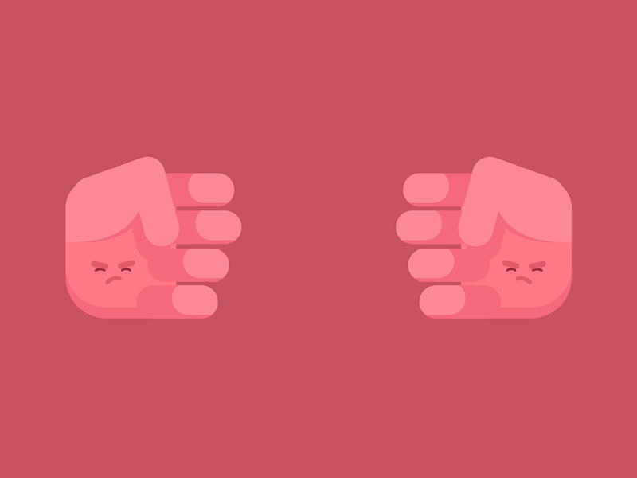

- Rock wins against scissors.
- Scissors wins against paper.
- Paper wins against rock.
- If chose Same ? Draw game !
  
 
Rock Paper Scissors is a zero sum game that is usually played by two people using their hands and no tools. The idea is to make shapes with an outstretched hand where each shape will have a certain degree of power and will lead to an outcome.People find it quite hard to pick a sequence of perfectly random choices, so any pattern that a player develops could be learned by the opponent and used to win the game.As you play, the players learn the pattern of objects that you are most likely to pick.
This game is played by children and adults and is popular all over the world. Apart from being a game played to pass the time, the game is usually played in situations where something has to be chosen. It is similar in that way to other games like flipping the coin, throwing dice or drawing straws. There is no room for cheating or for knowing what the other person is going to do so the results are usually very satisfying with no room for fighting or error.
 
Enjoyed the game, share it with your friends...
Thank you for choosing our Tool.